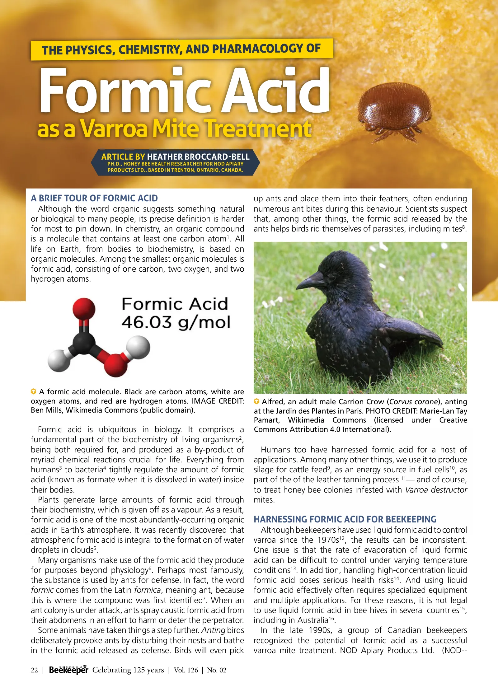

A BRIEF TOUR OF FORMIC ACID
Although the word organic suggests something natural
or biological to many people, its precise definition is harder
for most to pin down. In chemistry, an organic compound
is a molecule that contains at least one carbon atom1. All
life on Earth, from bodies to biochemistry, is based on
organic molecules. Among the smallest organic molecules is
formic acid, consisting of one carbon, two oxygen, and two
hydrogen atoms.
Formic acid is ubiquitous in biology. It comprises a
fundamental part of the biochemistry of living organisms2,
being both required for, and produced as a by-product of
myriad chemical reactions crucial for life. Everything from
humans3 to bacteria4 tightly regulate the amount of formic
acid (known as formate when it is dissolved in water) inside
their bodies.
Plants generate large amounts of formic acid through
their biochemistry, which is given off as a vapour. As a result,
formic acid is one of the most abundantly-occurring organic
acids in Earth’s atmosphere. It was recently discovered that
atmospheric formic acid is integral to the formation of water
droplets in clouds5.
Many organisms make use of the formic acid they produce
for purposes beyond physiology6. Perhaps most famously,
the substance is used by ants for defense. In fact, the word
formic comes from the Latin formica, meaning ant, because
this is where the compound was first identified7. When an
ant colony is under attack, ants spray caustic formic acid from
their abdomens in an effort to harm or deter the perpetrator.
Some animals have taken things a step further. Anting birds
deliberately provoke ants by disturbing their nests and bathe
in the formic acid released as defense. Birds will even pick
A formic acid molecule. Black are carbon atoms, white are
oxygen atoms, and red are hydrogen atoms. IMAGE CREDIT:
Ben Mills, Wikimedia Commons (public domain).
Alfred, an adult male Carrion Crow (Corvus corone), anting
at the Jardin des Plantes in Paris. PHOTO CREDIT: Marie-Lan Tay
Pamart, Wikimedia Commons (licensed under Creative
Commons Attribution 4.0 International).
as a Varroa Mite Treatment
THE PHYSICS, CHEMISTRY, AND PHARMACOLOGY OF
ARTICLE BY HEATHER BROCCARD-BELL
PH.D., HONEY BEE HEALTH RESEARCHER FOR NOD APIARY
PRODUCTS LTD., BASED IN TRENTON, ONTARIO, CANADA.
up ants and place them into their feathers, often enduring
numerous ant bites during this behaviour. Scientists suspect
that, among other things, the formic acid released by the
ants helps birds rid themselves of parasites, including mites8.
Humans too have harnessed formic acid for a host of
applications. Among many other things, we use it to produce
silage for cattle feed9, as an energy source in fuel cells10, as
part of the of the leather tanning process 11— and of course,
to treat honey bee colonies infested with Varroa destructor
mites.
HARNESSING FORMIC ACID FOR BEEKEEPING
Although beekeepers have used liquid formic acid to control
varroa since the 1970s12, the results can be inconsistent.
One issue is that the rate of evaporation of liquid formic
acid can be difficult to control under varying temperature
conditions13. In addition, handling high-concentration liquid
formic acid poses serious health risks14. And using liquid
formic acid effectively often requires specialized equipment
and multiple applications. For these reasons, it is not legal
to use liquid formic acid in bee hives in several countries15,
including in Australia16.
In the late 1990s, a group of Canadian beekeepers
recognized the potential of formic acid as a successful
varroa mite treatment. NOD Apiary Products Ltd. (NOD--
22 |
Celebrating 125 years | Vol. 126 | No. 02